library(dartRverse)W08 Genetic Structure of Wild Populations to Inform Management
W08 Genetic Divergence & Phylogenetics

Introduction
In this session we are going to cover some of the basic analyses that can be taken to inform management when faced with threatened species showing genetic structure across their natural range. The central considerations are how to draw from those populations to establish captive insurance colonies, and how to plan releases to boost declining populations.
We have heard of some real-world examples on lions by Laura Pertola and small Australian mammals by Kate Rick. In this session, we will cover some of the considerations for defining management units, ESUs and other userful designations. Craig will cover the theory and practice of population divergence. We will then look a PCA in a little more detail as one of the most powerful tools for examining structure within large SNP datasets. We will run through the seven deadly sins of classical PCA that allow the technique to be used with confidence.
Please refer to the article Georges, A., Mijangos, L., Patel, H., Aitkens, M. and Gruber, B. 2023. Distances and their visualization in studies of spatial-temporal genetic variation using single nucleotide polymorphisms (SNPs). BioxRiv https://doi.org/10.1101/2023.03.22.533737.
We move on to the example of the Broad Toothed Rat in the Barrington Tops region of NSW, not so much as a definitive study, but as a sandpit to explore some of the analyses that can be applied to a structured wild population.
We finish with an Exercise using data from the endangered Western Sawshell Turtle of the Murray Darling River Basin.
A central question in both of these studies is when there is strong genetic structure across the landscape, does this imply separate management of the distinct genetic units, and if so, at what scale.
Prerequisites
No prerequisites required. This is a very basic treatment
Workflow
Genetic structure and SNPs, defining units relevant to management.
The seven deadly sins of classical PCA
Jump into the sandpit with the Broad Toothed Rat
Exercise with the Western Sawshell Turtle
Discussion
Learning outcomes
Population divergence models
Usage of PCA
To correctly identify population structure
The why & how of population divergence models
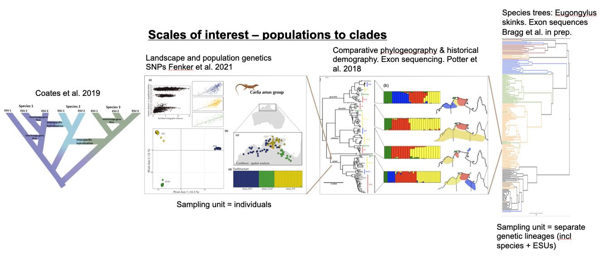
Analysing the history of divergence and gene flow is key to defining conservation units within species
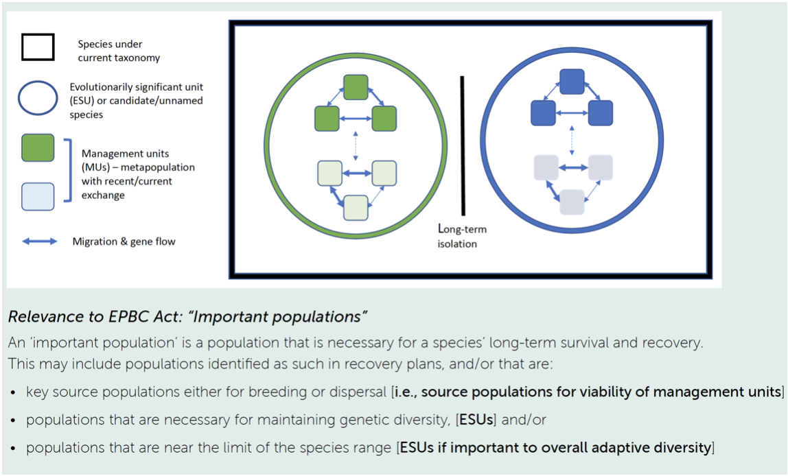
Sampling matters for species with limited dispersal!
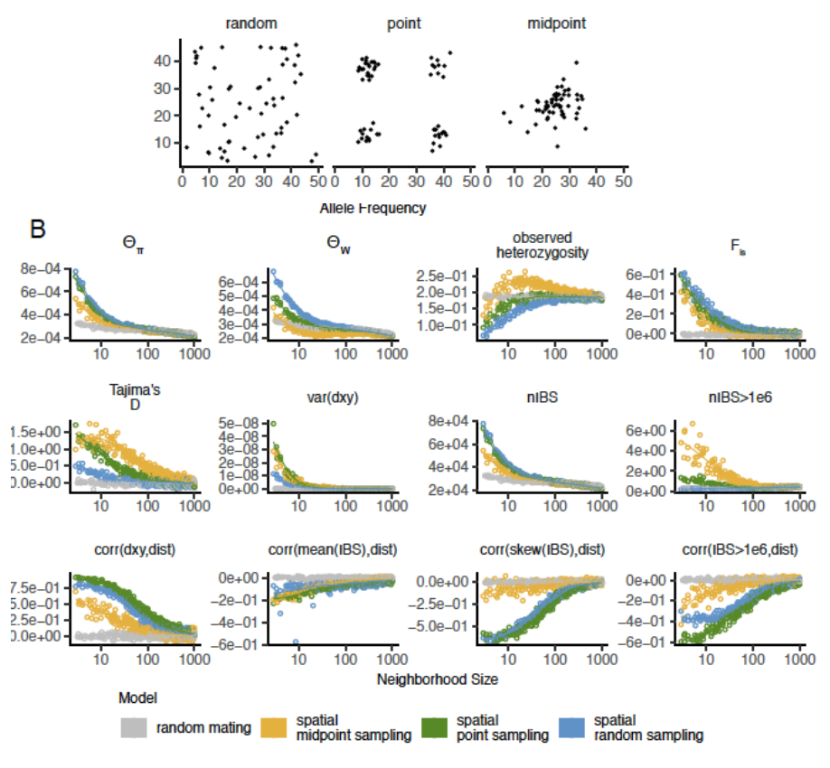
Restricted dispersal -> isolation by distance
Spatially cluster sampling yields biased estimates of population parameters, clustering etc.
Why not use SNP-based phylogenies to estimate divergence times?
Gene trees differ from species trees: Average divergence is > split time due to deep coalescence of lineages. Difference increases with Na
SNP-based analyses overestimate divergence unless # invariant sites is known
See Leache et al. 2015 Syst. Biol.
Approaches to modeling divergence histories – population models and the multispecies coalescent
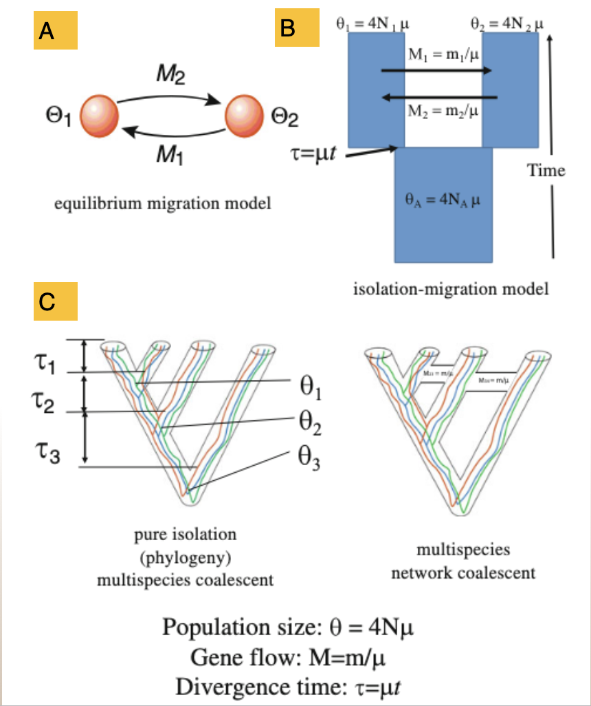
2 population model at mutation-migration equilibrium (e.g MIGRATE)
2 population Isolation with Migration (IM) model
Multispecies coalescent models +/- migration
Fitting population divergence models
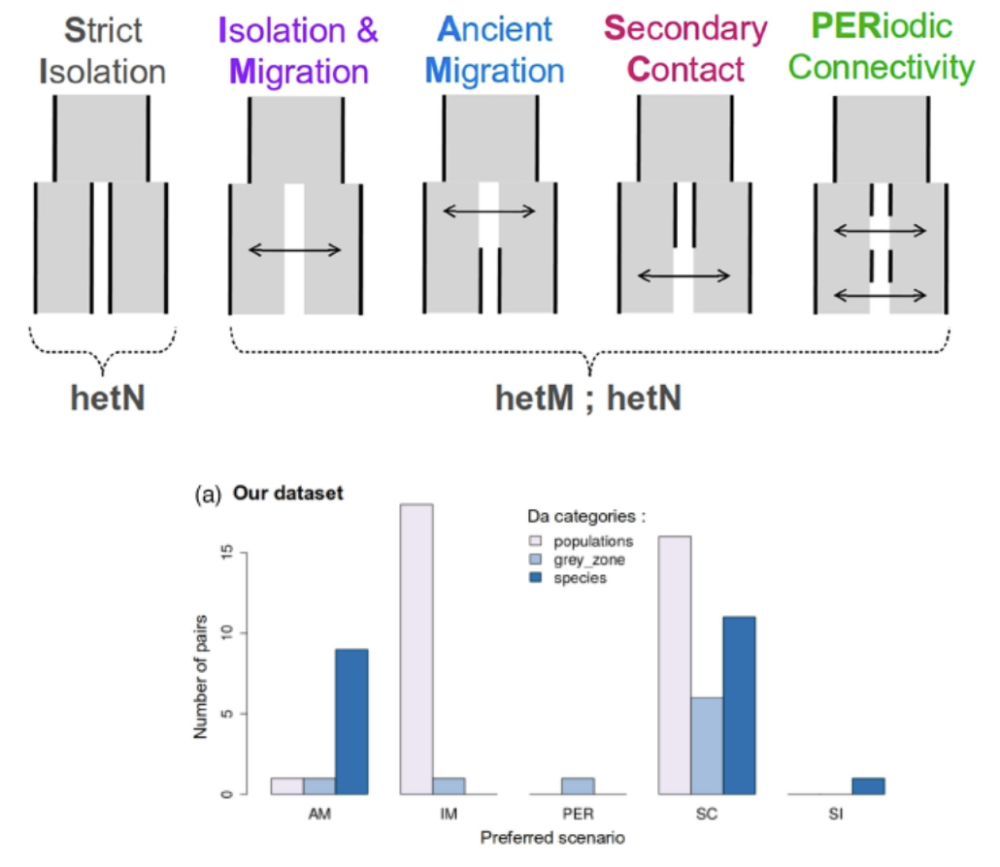
- All models are wrong…
- Which one(s) best fit your data?
- Methods: dadi, moments, DILS
- Example: Marine populations
Example: rock wallabies from northern Australia (Potter et al. 2024 Syst. Biol.)
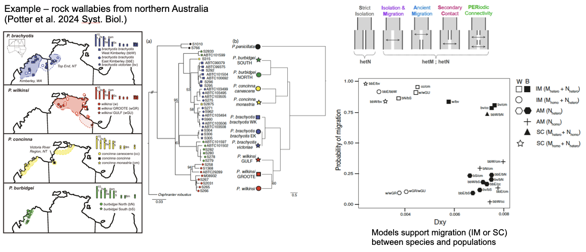
Phylogenetic discordance suggests current or historical gene flow among species
Models support migration (IM or SC) between species and populations
Take home messages
- Well-distributed population sampling is important! Often this is iterative.
- SNP based phylogenies, PCAs etc are useful as heuristics and to develop hypotheses BUT…
- Coalescent-based population methods should be used to estimate population divergence histories
- Comparing alternative models of divergence is useful BUT…
- Remember all models are wrong…
Seven sins of classical PCA
1. Missing values
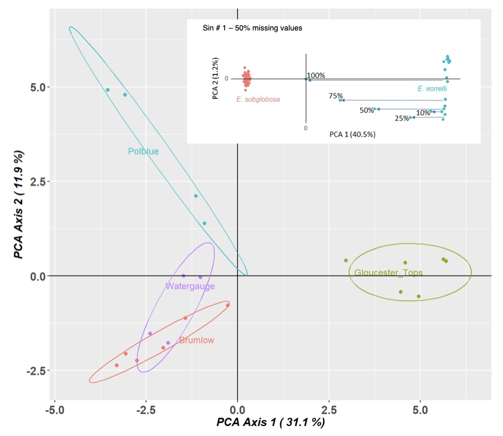
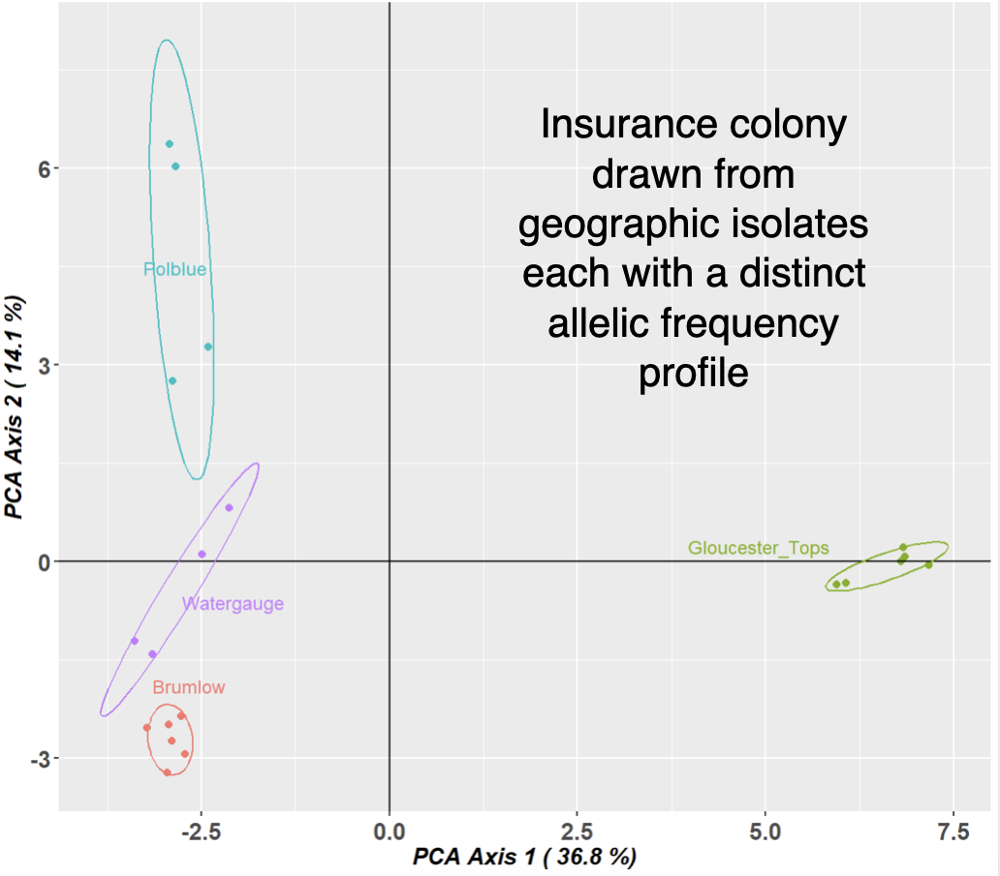
2. Inappropriate distance metric
PCA vs PCoA
You can substitute the standardized covariance matrix used by PCA with any standardized distance metric (Gower, 1966).
dartR coding
- 0, homozygous reference allele (DArT set this as the most common allele)
- 1, heterozygous
- 2, homozygous alternate allele
Relative distances between individuals must not depend on the arbitrary choice of reference and alternate allele. Prudent to check this.
3. Including close relatives
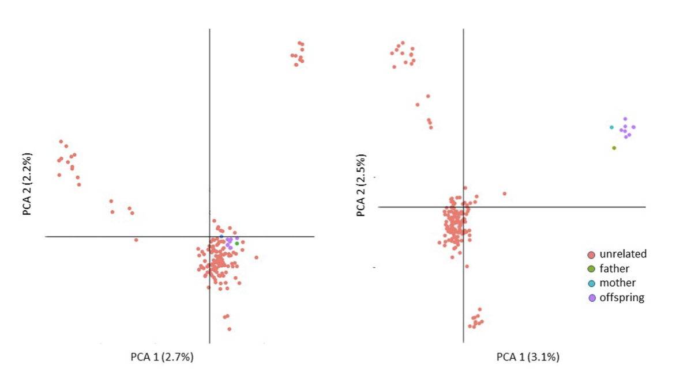
4. Choosing two dimensions for convenience
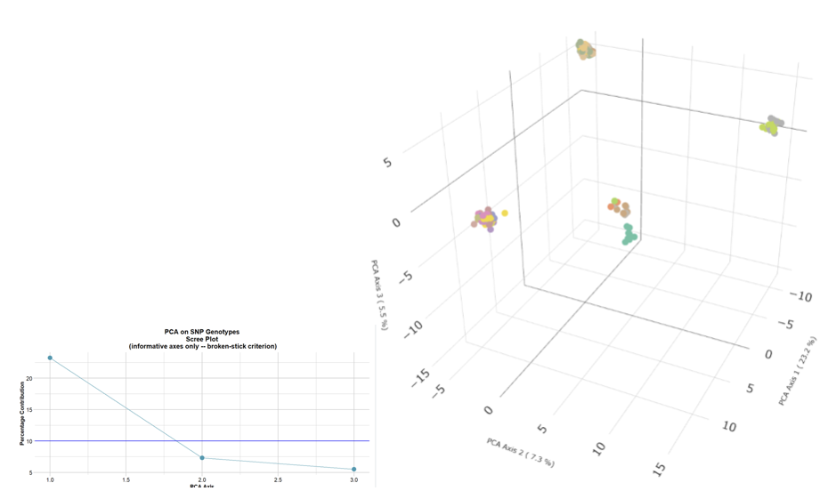
Separation is definitive. Proximity is ambiguous.
Identify informative dimensions (Broken-Stick Criterion) Explicitly choose what information willing to discard
5. Confounding % explained with biological importance
Sin 5: “PC1 explains X% across datasets, a comparable across studies measure of”strength of structure”
But % variance depends on loci, scaling, LD pruning, MAF filters, sample composition. Use the Tracy-Widom framework, and by default in dartR, the broken-stick criterion to distinguish signal from noise.
AND
PCA and PCoA compute % explained in fundamentally different ways and so are not comparable.
6. Structural variants and gross linkage
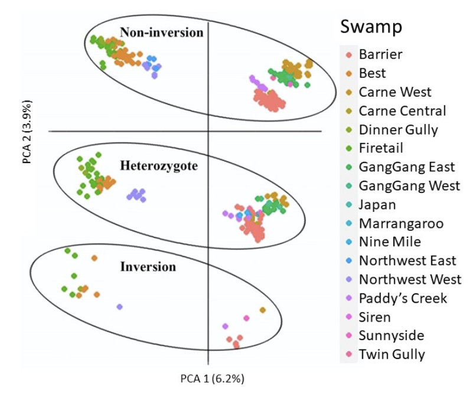
Weird inexplicable patterns – 2 or 3 replicated sets of aggregations If two patterns – sex linkage?
If 2 or 3, large structural variant?
7. Over-interpretation
Sin 7: Treating PCs as direct evidence for specific processes, discrete groups, or biological mechanisms when PCA is fundamentally a variance-maximizing projection showing patterns.
BOTTOM LINE
Care to avoid the seven sins. PCA is an incredible tool that lends itself to SNP analysis. But it is a hypothesis generating tool only and must be followed by more definitive analyses.
Worked Example: Broad Toothed Rat
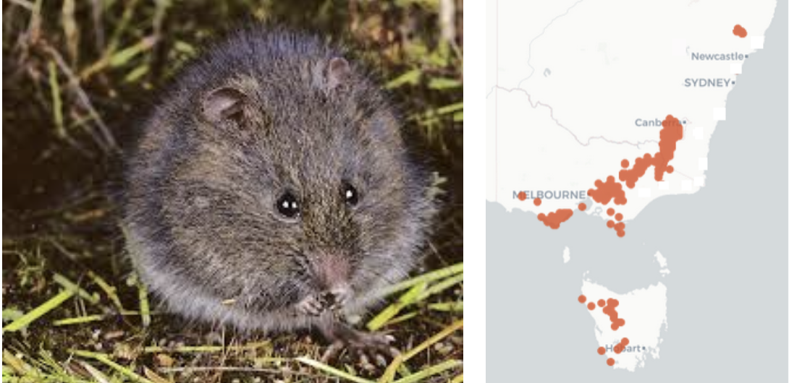
Insurance breeding colony established
Sampled using cheek swabs
Genotyped using DArTseq
Advice on who to breed with whom to maximize genetic diversity in the offspring
Opportunity for us to explore genetic diversity in the source population
Required packages
Step 1 Load in the data:
gl.set.verbosity(3)
gl <- gl.load(file="./data/Mastocomys.Rdata")Step 2 Interrogate:
gl
popNames(gl)
indNames(gl)
table(pop(gl))
gl@other$latlongStep 3 Examine geography:
gl.map.interactive(gl)Step 4 Filtering:
gl.report.callrate(gl)gl.filter.callrate(gl, threshold=0.5)Step 5 Exploratory visualization:
pca <- gl.pcoa(gl)
gl.pcoa.plot(pca,gl,ellipse=TRUE, plevel=0.67)gl <- gl.impute(gl)
pca <- gl.pcoa(gl) # 2 informative axes
gl.pcoa.plot(pca,gl,ellipse=TRUE, plevel=0.67)Step 6 Analysis:
# F Statistics
gl.report.fstat(gl)# Allelic Richness
r1 <- gl.report.allelerich(gl)# Allelic Richness Simulation
r1 <- gl.report.allelerich(gl)
r2 <- gl.report.nall( x = gl, simlevels = seq(1, nInd(gl), 5), reps = 10, plot.colors.pop = gl.colors("dis"), ncores = 2)# Private Alleles
r1 <- gl.report.pa(gl)Step 7. Interpetation
- PCA indicates a high degree of population structure
- This is borne out by the FST analysis
- Allelic diversity is a little low, not exceptionally, and not differentially
- Each subpopulation has a high frequency of private alleles
Working Hypothesis: The Barrington Tops populations likely represent a former widespread and connected population, subsequently fragmented with differential loss and retention of alleles under the influence of drift.
Future Work: - Increase sample sizes to better capture allelic profiles - Calculate \(N_e\) to assess likelihood of population persistence - Plot \(N_e\) through time to see if there is evidence of a bottleneck
Kate Rick: Strong structure does not necessarily mean separate management of divergent groups.
Maximizing the Barrington Tops population potential to adapt and persist may require cross-breeding and distributed release.
Management (subject to findings of future work) Sampling should be from across the sites in Barrington Tops, cross-breeding should be undertaken to capture allelic diversity, and strategic re-release across sites is likely to be a well-supported strategy.
Worked Example: Western Sawshell Turtle
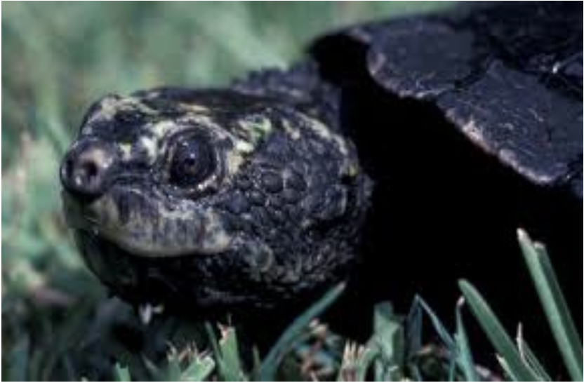
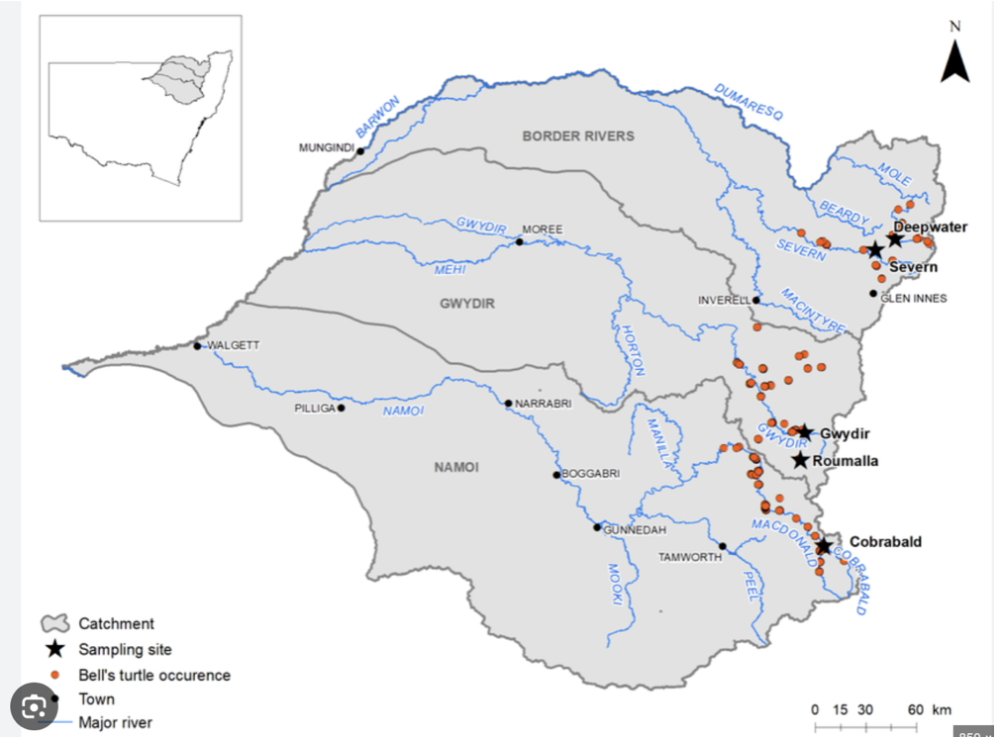
Not cute as mustard, EPBC Act:Endangered; Headwaters of the Murray-Darling Basin – Namoi, Gwydir and Border Rivers subdrainage basins
Insurance breeding colony established
Sampled using skin biopsy
Genotyped using DArTseq
Is the colony representative of the genetic diversity of wild populations
Advice on who to breed with whom to maximize genetic diversity in the offspring for release
Exercise: Western Sawshell Turtle
Step 1. Load in the data (Myuchelys.Rdata)
Step 2. Interrogate the data
Step 3. Examine geographically
Step 4. Filtering – craft a regime
Step 5. Exploratory visualization
Step 6. Analysis
Step 7. Interpretation
Required packages
library(dartRverse)Step 1 Load in the data:
gl.set.verbosity(3)
gl <- gl.load(file="./data/Myuchelys.Rdata")Step 2 Interrogate:
gl
popNames(gl)
indNames(gl)
table(pop(gl))
gl@other$latlonStep 3 Examine geography:
gl.map.interactive(gl)Step 4 Craft a Filtering Regime:
First let us do a smear plot of individuals (vertical) against loci (horizontal)
gl.smearplot(gl)Note that missing values are in grey, so they give an indication of how dense your data set is (as opposed to being littered with gaps). Then we craft a filtering regime.
Unfortunately, we do not have the sexes in this dataset, so we cannot filter on sex linkage, which would be our first port of call. So lets start with call rate.
gl.report.callrate(gl)The distribution of call rate values indicates a need for filtering, and based on that distribution we pick a threshold of 0.95.
Any loci with less than 95% scored across individuals will be discarded.
gl.filter.callrate(gl, threshold=0.95)Next we filter on callrate by individual.
gl.report.callrate(gl,method="ind")No individuals have an unacceptable call rate so we do not filter any out.
gl.report.rdepth(gl)Filter on read depth, selecting 5x as a minimum.
gl.filter.rdepth(gl, lower=5)Then report on reproducibility. Recall that DArT run technical replicates to check the reliability of calls.
gl.report.reproducibility(gl)There are quite a few loci that show poor reproducibility. So lets filter out those with a reproducibility of less than 99%
gl.filter.reproducibility(gl, threshold=0.99)gl.smearplot(gl)Step 5 Exploratory visualization:
pca <- gl.pcoa(gl)
gl.pcoa.plot(pca,gl,ellipse=TRUE, plevel=0.95)Note: You might be tempted to filter out all loci that are less than 100% reliable, but this can cause an ascertainment bias. In particular, loci that are heterozygous will be called with less certainty, and so filtering that is too stringent will preferentially remove more polymophic sites.
Now lets visualize the structure with PCA. Note that we do not need to impute because the missing value rate is only 0.6%, unlikely to cause appreciable distortion.
gl.pcoa.plot(pca,gl,xaxis=1, yaxis=3, ellipse = TRUE, plevel=0.95)Four nice clusters in the space defined by the top two dimensions. Note however that, by the split stick criterion, there are three informative dimensions. Separation can be believed, but proximity is ambiguous. So the proximity of the two drainages within the border rivers region may not be sustained when we examine the third dimension.
gl.pcoa.plot(pca,gl,xaxis=1, yaxis=3,interactive=TRUE)And indeed it is not. Why do we look at PC axis 1 and 2, then PC axis 1 and 3. Why not 3 and 4. First of all, axis 4 was not informative, and will likely be misleading if we do not scale the axes. Second, if you plot 1 vs 2 and 1 vs 3, you can flop 1 vs 3 back into the page and better visualize the 3D structure in the dataset.
Better still, you can plot the data in 3D and then manually apply a rotation of the axes to better show the separation of sites.
gl.pcoa.plot(pca,gl,xaxis=1, yaxis=2, zaxis=3)All good. Four aggregations that can be distinguished by their allelic profiles folloing ordination and dimension reduction.
Step 6 Analysis:
F Statistics
# F Statistics
gl.report.fstat(gl)The structure in the PCA is reflected in the Fst values.
0–0.05: little differentiation 0.05–0.15: low–moderate 0.15–0.25: moderate > 0.25: high / very high
Border Nth vs South : low-moderate Rest : Moderate
What about allelic richness.
# Allelic Richness
r1 <- gl.report.allelerich(gl)Nothing spectacular there.
gl.report.heterozygosity(gl)Again, not a lot in that. No strong evidence of inbreeding depression in any of the four aggregations.
gl.report.diversity(gl)# Private Alleles
r1 <- gl.report.pa(gl)Again, not a lot to see there, though there seems to be a discrepency between q=0 and the results from gl.report.heterozygosity. Coders?
Lets see where these four populations sit in relation to expectation build on the global trend in allelic richness against population size. This takes some time to run, so maybe do this at another time.
# Allelic Richness Simulation
r2 <- gl.report.nall( x = gl, simlevels = seq(1, nInd(gl), 5), reps = 10, plot.colors.pop = gl.colors("dis"), ncores = 2)Questions:
- Is there structure in the dataset evident in the PCA?
- Is this borne out by FST analysis?
- Are there discrete management units evident?
- Are any of these showing evidence of critical loss of genetic diversity/inbreeding?
- What are the lessons/advice for management?
Conclusion
Where have we come?